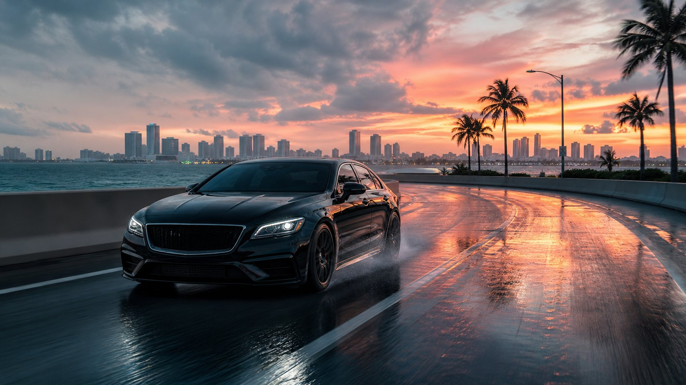

Ne casse pas la vitre à l’aveugle
Une alarme peut avertir les passants; certains modèles à accès sans clé demandent un outil débloqué. Scanne quand l’app l’autorise et pèse le coût d’enregistrement avant d’investir dans une voiture volée.

GAMEPLAY · CONDUITE · VOITURES · DÉPLACEMENTS · VEILLE 18/11/2026
La voiture joue aussi le rôle de base mobile : le coffre, les traces de sécurité et la maniabilité comptent autant que la vitesse. Les conseils ci-dessous proviennent des premières reviews et guides de lancement, pas de tests exhaustifs de tous les véhicules.
Illustration générée pour ce guide; image d’ambiance, pas capture ni preuve du jeu.
Le guide GameSpot décrit l’application Waink comme un outil de lecture des dispositifs de sécurité, de la valeur de revente et du coût d’enregistrement. Alarmes, trackers standards ou avancés et systèmes sans clé changent la manière de démarrer et conserver un véhicule. Progression et outils disponibles peuvent conditionner les options.
Une alarme peut avertir les passants; certains modèles à accès sans clé demandent un outil débloqué. Scanne quand l’app l’autorise et pèse le coût d’enregistrement avant d’investir dans une voiture volée.
GameSpot rapporte que les trackers avancés peuvent alerter les policiers si le véhicule s’éloigne trop. Après enregistrement chez Pay ’n’ Spray, le véhicule peut être rappelé via l’application Scooter Bros, selon le guide.
GameSpot compare les voitures légères, rapides mais fragiles, aux camions plus lourds et moins faciles à freiner. Une berline standard lui a semblé plus tolérante dans les virages. Ces impressions varient selon le joueur et les réglages.
Les critiques décrivent une inertie marquée à haute vitesse et des chaussées plus étroites. Lève le pied avant le virage, freine progressivement et apprends la voiture sur une route dégagée plutôt que dans une poursuite.
Selon plusieurs reviews, les coffres transportent armes longues, vêtements de rechange et objets collectés. Une moto reste agile mais ne remplace pas une voiture préparée lorsque tu transportes du matériel ou du butin.
GameSpot rapporte RydeMe avec option de trajet sauté payante et un réseau de bus et trains à horaires. Changer de protagoniste peut aussi éviter un long retour selon l’endroit où l’autre se trouve.